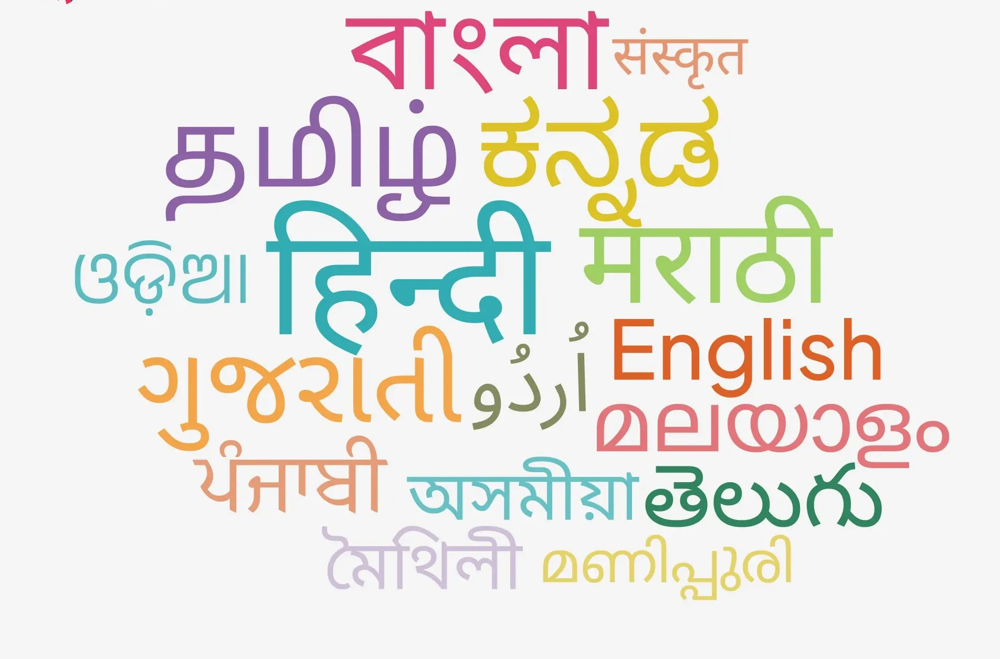
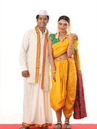

Bharatanatyam
Bharatanatyam is one of the oldest and most classical dance forms of
India, with roots tracing back over 2,000 years. It originated in
the temples of Tamil Nadu, a state in South India, where it was
traditionally performed by devadasis (female temple dancers) as an
offering to the deities. The word Bharatanatyam is derived from
three key elements: 'Bhava' (expression), 'Raga' (melody), and
'Tala' (rhythm), which are the essence of this dance form.
Bharatanatyam is known for its graceful movements, intricate
footwork, hand gestures (mudras), and facial expressions (abhinaya)
that together tell stories from Hindu mythology, especially about
gods like Lord Shiva, Vishnu, and Krishna.Originally performed in
temples as part of religious rituals, Bharatanatyam later moved to
the stage and became a respected art form showcased in cultural
festivals and events worldwide. The dance is deeply spiritual and is
considered a form of “Natyayoga” — a union with the divine through
dance. Dancers wear traditional costumes, often brightly colored
silk with gold borders, along with elaborate jewelry, bells
(ghungroos) on their ankles, and decorative makeup that highlights
their expressions. The performance is usually accompanied by
Carnatic music and a group of live musicians, including a vocalist,
mridangam (drum), flute, and violin.

Lavni
Lavani is a popular traditional folk dance of Maharashtra, known for
its powerful rhythm, expressive gestures, and vibrant energy. The
word "Lavani" comes from the Sanskrit word 'lavanya', which means
beauty or grace. This dance form combines music, dance, and drama,
and is usually performed to the beats of the dholki, a traditional
percussion instrument. Lavani is characterized by its fast footwork,
bold facial expressions, and graceful body movements. It is
performed mostly by women, dressed in traditional nine-yard sarees
(Nauvari), adorned with jewelry, and tied in a special Maharashtrian
style. The performances are often dramatic and filled with emotion,
and the songs are typically written in Marathi, dealing with themes
such as love, social issues, bravery, and politics. Lavani became
especially popular during the Peshwa rule and was performed in royal
courts as a form of entertainment. It also played a significant role
in boosting the morale of soldiers during war times. Today, Lavani
is performed on stage and in folk festivals across India and
continues to be a symbol of Maharashtrian cultural identity. Its
bold style and strong storytelling make it a unique and lively dance
form that connects tradition with performance art.
Indian languages

India’s linguistic landscape is one of the world’s most diverse,
with 424 living indigenous languages spoken among its 1.4 billion
people, reflecting a deep-rooted cultural and regional diversity.
The Constitution of India recognizes 22 scheduled languages, but
only Hindi and English are officially used by the central government
for administrative purposes, while major regional languages such as
Bengali, Marathi, Telugu, Tamil, Gujarati, Urdu, Kannada, Odia,
Malayalam, and Punjabi are also prominent and officially recognized
in their respective states. Hindi is the most widely spoken
language, with over 52.8 crore (528 million) first-language
speakers—about 43.6% of the population—and, including second and
third language speakers, is spoken by nearly 69 crore (690 million)
people, representing 57% of Indians. Bengali (9.7 crore), Marathi
(8.3 crore), Telugu (8.1 crore), and Tamil (6.9 crore) are other
languages with tens of millions of speakers. Multilingualism is
common, with 26% of Indians speaking at least two languages and 7%
speaking three, illustrating how languages overlap in daily life.
English, though spoken natively by only a minority, is widely used
as a second language in business, education, and government. The
linguistic diversity is further highlighted by the fact that 30
languages are spoken by more than a million native speakers, and 14
languages by over 10 million. Despite this richness, some languages
are endangered, and 11 indigenous languages are already extinct.
India’s languages belong to several major language families,
including Indo-Aryan (e.g., Hindi, Bengali), Dravidian (e.g., Tamil,
Telugu), Austro-Asiatic, and Tibeto-Burman, each with its own
literary traditions and cultural heritage. This complex mosaic is a
defining feature of Indian culture, representing both a challenge
and a testament to the country’s unity in diversity
Rangoli
Rangoli is a traditional Indian art form made by creating colorful
patterns on the ground, usually at the entrance of homes,
courtyards, or temples. It holds a special place in Indian culture
and festivals, especially during celebrations like Diwali, Pongal,
Onam, and Sankranti. Rangoli is made using materials like colored
powders, rice flour, flower petals, sand, or grains, and often
features geometric shapes, floral designs, and symbols like
peacocks, lamps (diyas), or deities. It is believed to bring good
luck, positivity, and prosperity to the household and is considered
a gesture of welcoming guests and gods. The art of making Rangoli is
passed down through generations and is typically done by women in
the early morning or during festive occasions. Each region of India
has its own style and name for Rangoli—for example, it’s called
Kolam in Tamil Nadu, Alpana in Bengal, and Mandana in Rajasthan.
Besides being a form of decoration, Rangoli also reflects
creativity, patience, and devotion. It symbolizes joy, beauty, and
the cultural richness of India, and continues to be an important
part of Indian festivals, rituals, and traditional celebrations.
Indian Music

Ustad Zakir Hussain tabla maestro and one of the most celebrated figures in Indian classical music. Born on March 9, 1951, in Mumbai, he is the son of the legendary tabla player Ustad Alla Rakha, and inherited a deep love for rhythm and music from an early age. Zakir Hussain is known for his extraordinary talent, speed, and creativity on the tabla, and has played a major role in popularizing Indian percussion on the global stage. Trained in the Hindustani classical tradition, he has performed with some of the greatest Indian musicians, such as Pandit Ravi Shankar, L. Subramaniam, and Shivkumar Sharma. Beyond classical music, he has collaborated with famous Western artists like John McLaughlin in the fusion band Shakti, and has worked in genres like jazz, world music, and film music. Zakir Hussain is not only a performer but also a composer, teacher, and cultural ambassador, representing India at prestigious global events. He has received numerous awards, including the Padma Shri, Padma Bhushan, and the Grammy Award, making him one of the most respected musicians in the world. His contribution to music has made him a symbol of artistic excellence, innovation, and cross-cultural harmony.
The Sitar is a famous and traditional stringed instrument used in Indian classical music, especially in the Hindustani (North Indian) music tradition. It has a long, hollow neck and a large, round body made from a gourd. The sitar typically has six to seven main playing strings and sympathetic strings (called taraf), which resonate to create a rich, echoing sound. It is known for its melodic depth, resonance, and ability to produce microtones that give Indian music its unique character. The sitar is played using a metal plectrum (mizrab) worn on the index finger, and performers use intricate finger techniques to play both melodies and complex rhythmic patterns. The Sitar became popular worldwide during the 20th century, especially through legendary artists like Pandit Ravi Shankar, who introduced it to Western audiences and collaborated with musicians like George Harrison of The Beatles. Traditionally, the sitar is used to perform ragas, which are melodic frameworks for improvisation and expression in Indian classical music. The instrument holds a respected place in India’s cultural and spiritual heritage, and learning to play it requires dedication, practice, and deep understanding of music. The sitar continues to inspire musicians across the world and remains a symbol of the rich legacy of Indian classical music.

South Indian Food

South Indian food is known for its flavorful spices, healthy ingredients, and diverse dishes that are both delicious and nutritious. Originating from the southern states of Tamil Nadu, Kerala, Karnataka, Andhra Pradesh, and Telangana, this cuisine mainly uses ingredients like rice, lentils, coconut, tamarind, curry leaves, mustard seeds, and various spices. Common South Indian dishes include Dosa (a crispy rice pancake), Idli (steamed rice cakes), Vada (fried lentil donuts), and Uttapam (a thick pancake with toppings). These are often served with sambar (a spicy lentil soup) and chutneys made of coconut, tomato, or mint. Rasam, a tangy soup, is also a staple part of meals. In Kerala, food is often served on a banana leaf, and dishes like Avial, Puttu, and Appam are widely enjoyed. South Indian cuisine is mostly vegetarian, but it also offers non-vegetarian specialties like Chettinad chicken, Andhra fish curry, and Malabar biryani. The use of spices and natural ingredients not only adds taste but also provides health benefits. South Indian food is loved for its aromatic flavors, variety of textures, and its perfect balance of taste, tradition, and nutrition.
North Indian Food
North Indian food is rich, flavorful, and deeply influenced by Mughal cuisine, as well as the diverse regional traditions of states like Punjab, Uttar Pradesh, Rajasthan, Haryana, and Kashmir. This cuisine is known for its creamy curries, aromatic spices, tandoori cooking, and wheat-based breads. Common ingredients include ghee (clarified butter), dairy products, tomatoes, onions, garlic, ginger, and a variety of spices such as cumin, coriander, garam masala, and turmeric. Popular dishes include Butter Chicken, Paneer Tikka, Rogan Josh, Chole (chickpea curry), Rajma (kidney bean curry), and Dal Makhani. These are often paired with naan, roti, paratha, or biryani. In Rajasthan, dishes like Dal Baati Churma and Gatte ki Sabzi are famous, while in Punjab, food is typically hearty and served with lassi (a yogurt-based drink). North Indian food is also known for its wide variety of street foods like chaat, samosa, kachori, and golgappa (pani puri). Sweets such as Gulab Jamun, Jalebi, Rasgulla, and Kheer are an essential part of meals. North Indian cuisine is a perfect blend of spice, richness, and tradition, and continues to be one of the most loved food styles across India and the world.

West Indian Food

West Indian food is a vibrant and diverse blend of flavors, shaped by the cultural and geographical variety of the western states of India—Rajasthan, Gujarat, Maharashtra, and Goa. Each state has its own unique food traditions and ingredients. Rajasthani cuisine is known for its spicy and hearty dishes like Dal Baati Churma, Gatte ki Sabzi, and Ker Sangri, often made to last long due to the desert climate. Gujarati food is mostly vegetarian, featuring a perfect balance of sweet, salty, and spicy tastes. Dishes like Dhokla, Thepla, Undhiyu, and Khandvi are commonly served in a Gujarati thali, along with various chutneys and farsan (snacks). In Maharashtra, food varies by region—Puran Poli, Misal Pav, Vada Pav, and Poha are popular, along with Kombdi Vade and Malvani fish curry in coastal areas. Goan cuisine, influenced by Portuguese culture, is famous for its seafood, coconut-based curries, and pork dishes like Vindaloo and Xacuti. West Indian food uses ingredients like coconut, mustard seeds, tamarind, jaggery, and a variety of local spices. Whether it’s vegetarian or non-vegetarian, the cuisine of western India is known for its bold flavors, variety, and deep cultural roots.
South Indian Dress
South Indian traditional dress reflects the region’s rich cultural heritage, simplicity, and elegance. For women and girls, the most iconic attire is the saree, usually made of silk or cotton, with famous varieties like Kanchipuram (Kanjeevaram) silk sarees from Tamil Nadu, known for their rich borders and intricate designs. Young girls often wear pavada (lehenga) with blouse and davani (half-saree) during festivals and ceremonies. These outfits are paired with gold jewelry, fresh jasmine flowers in the hair, and bindi on the forehead. In Kerala, women traditionally wear the Kasavu saree, a white or cream saree with a golden border, especially during Onam and weddings.
For men, traditional South Indian attire includes a dhoti or veshti (a long white or cream cotton cloth wrapped around the waist and legs), often paired with an angavastram (a shoulder cloth) or a kurta or shirt. In Kerala, men wear mundu, a similar garment. During formal or festive occasions, men may also wear silk dhotis with zari borders. In temple rituals, weddings, and cultural events, both men and women follow these traditional dress customs, reflecting respect for tradition, comfort, and cultural pride. While modern fashion is common in daily life, traditional South Indian clothing continues to play a vital role in festivals, weddings, and religious occasions.

North Indian Dress

In North Indian culture, the groom’s wedding attire is a symbol of royalty, tradition, and elegance, deeply influenced by Mughal and Rajput styles. The most common traditional outfit worn by a North Indian groom is the Sherwani, a long, fitted coat-like garment, usually embroidered with intricate designs in gold or silver thread. It is paired with a churidar or dhoti-style trousers, and often made from rich fabrics like silk, brocade, or velvet. Along with the sherwani, the groom wears a safa or pagdi (turban), often adorned with a kalgi (decorative brooch) and sometimes a sehra, a veil of flowers or beads covering the face. A matching dupatta or stole is draped over one shoulder to add grace. Many grooms also wear mojari or jutti (traditional embroidered shoes) to complete the look. In some traditions, especially among Rajputs or Punjabis, the groom may carry a ceremonial sword as a symbol of honor and protection. Accessories like necklaces (kantha), rings, and brooches add to the grandeur. The groom usually arrives at the wedding venue in a Baraat, a celebratory procession with music and dancing, often riding a decorated horse or even a royal-style carriage. The North Indian groom's dress not only reflects style and splendor but also carries deep cultural and historical significance, representing the groom’s readiness and respect for the sacred union of marriage.
West Indian Dress
West Indian traditional dress reflects the diverse cultures, climates, and customs of the western Indian states like Rajasthan, Gujarat, Maharashtra, and Goa. In Rajasthan, women traditionally wear ghagra-choli (a long skirt and blouse) with a odhni or dupatta, often made with colorful fabrics, mirror work, and embroidery. Men wear angarkha (a long tunic), dhoti or churidar, and a safa (turban), which varies in style and color depending on the region and occasion. In Gujarat, women often wear chaniya choli with heavy mirror and beadwork, especially during festivals like Navratri, while men wear a kediyu (short flared top) and dhoti or churidar with a colorful turban. In Maharashtra, women wear the famous Nauvari saree (nine-yard saree) in a dhoti-style drape, symbolizing grace and strength. Men traditionally wear dhoti, kurta, and a pheta (turban), especially during weddings and religious functions. In Goa, due to Portuguese influence, traditional clothing is a blend of Indian and Western styles. Women may wear sarees with unique draping styles, and men may wear loose shirts and cotton pants with a western touch. Across all these states, traditional dresses are worn proudly during festivals, weddings, and cultural events, reflecting the region’s rich heritage, colorful lifestyle, and artistic craftsmanship.
